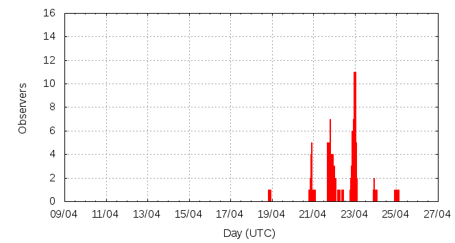

[ www.imo.net ]
This page shows automated results of the Lyrids 2014, based on visual observations reported by citizen scientists through the report form of the International Meteor Organization (IMO). The information on this page is generated automatically; for scientific use please refer to manual analyses published in scientific journals (such as WGN). Send your feedback regarding this page to Geert Barentsen.
Page contents:
Note that the data will finally go into the Visual Meteor Database (VMDB) with manual inspection and rectifications. We are curretly completing the files of 2008-2011. The VMDB is an enormous project - any help will be greatly appreciated.
Page generated: 2014 May 7 at 10:00 UTC.
The graph below shows the ZHR (Zenithal Hourly Rate), which is the number of meteors an observer would see under a very dark sky with the radiant of the shower in zenith.
ZHRmax = 16 based on 217 Lyrids reported in 83 intervals, assuming population index r = 2.1

| Time (UTC) | Solarlon | nINT | nLYR | ZHR | Particle density | |
|---|---|---|---|---|---|---|
| 2014-04-18 21:20 | 28.558 | 1 | 2 | 6 | ±3 | 9 / 109·km3 |
| 2014-04-20 21:45 | 30.528 | 12 | 15 | 9 | ±2 | 13 / 109·km3 |
| 2014-04-21 01:32 | 30.682 | 2 | 4 | 4 | ±2 | 6 / 109·km3 |
| 2014-04-21 21:09 | 31.480 | 7 | 23 | 12 | ±2 | 17 / 109·km3 |
| 2014-04-21 23:46 | 31.586 | 5 | 15 | 7 | ±2 | 10 / 109·km3 |
| 2014-04-22 03:55 | 31.755 | 3 | 12 | 14 | ±4 | 20 / 109·km3 |
| 2014-04-22 21:30 | 32.469 | 8 | 16 | 9 | ±2 | 13 / 109·km3 |
| 2014-04-22 22:50 | 32.523 | 6 | 21 | 10 | ±2 | 14 / 109·km3 |
| 2014-04-22 23:45 | 32.561 | 14 | 33 | 11 | ±2 | 16 / 109·km3 |
| 2014-04-23 00:37 | 32.596 | 13 | 46 | 16 | ±2 | 23 / 109·km3 |
| 2014-04-23 01:43 | 32.641 | 5 | 18 | 15 | ±3 | 21 / 109·km3 |
| 2014-04-23 23:08 | 33.510 | 4 | 7 | 5 | ±2 | 7 / 109·km3 |
| 2014-04-25 00:34 | 34.543 | 3 | 5 | 3 | ±1 | 4 / 109·km3 |
The reported intervals are automatically added together into the bins shown above, based on the number of meteors and the distribution of the intervals. For each bin, the following parameters are computed:
Data has been received from 32 observers in 18 countries. Thank you for your efforts!
Note: click on the map for an interactive version.

| Observer | Country | Teff | nLYR |
|---|---|---|---|
| Scott Pierre Bancolita | Philippines | 1.98h | 2 |
| Carlos Burgos | Spain | 3.54h | 24 |
| Josafary Campelo | Brazil | 1.85h | 22 |
| Kevin Foerster | Germany | 1.30h | 3 |
| Kevin Förster | Germany | 2.55h | 10 |
| Dmitry Gavriljuk | Russia | 1.00h | 3 |
| Sire Eduard Gella | Philippines | 2.96h | 5 |
| Gerald Peter Geronimo | Philippines | 2.96h | 5 |
| Milada Jakubecova | Slovakia | 1.00h | 2 |
| Zdenek Komarek | Slovakia | 1.00h | 2 |
| Jerwin Laurente | Philippines | 2.96h | 4 |
| Qiang Ma | China | 2h | 4 |
| Andjelka Milovanovic | Serbia | 1.32h | 9 |
| Angelo Gabriel Ramos | Philippines | 2.96h | 6 |
| Jatin Rathod | India | 0.49h | 1 |
| Ina Rendtel | Germany | 1.50h | 10 |
| Ivan Sergey | Belarus | 0.57h | 2 |
| Joan Serrq | Spain | 3.53h | 10 |
| Miguel Ange Serra Martin | Spain | 3.87h | 16 |
| Michal Stefancik | Slovakia | 2.47h | 5 |
| Jurgen Rendtel | Germany | 3.15h | 15 |
| Alexsandr Morozov | Russia | 1.19h | 6 |
| Salvador Aguirre | Mexico | 1.00h | 7 |
| Alexandr Maidik | Ukraine | 3h | 9 |
| Sasha Prokofyev | Russia | 3h | 10 |
| Pierre Bader | Germany | 6h | 13 |
| Branislav Savic | Serbia | 0.85h | 3 |
| Vilem Heblik | Czech Republic | 2.50h | 11 |
| Koen Miskotte | Netherlands | 2.18h | 4 |
| Stefan Schmeissner | Germany | 5.63h | 21 |
| Dunja Pavlovic | Serbia | 1.32h | 8 |
| Javor Kac | Slovenia | 2.26h | 12 |
| Roland Winkler | Germany | 1.59h | 2 |
Create your own analysis. The files below can be opened using Excel:
lyr2014_rate.csv (number of meteors per interval per observer)
lyr2014_magn.csv (number of meteors per magnitude bin per observer)
The information on this page may be distributed freely provided credit is given to the International Meteor Organization (IMO) and, when possible, to the individual observers. The computer facilities to generate this page are provided by ESA/RSSD and Armagh Observatory.
References: